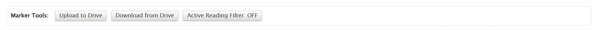
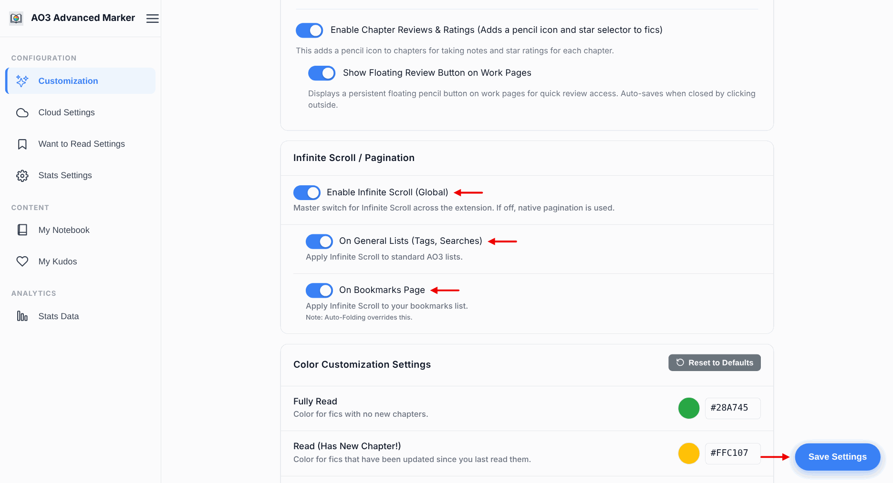

These tools work on AO3's lists of fics: search results, tag and fandom pages, your bookmarks and Marked for Later. Both are free.
Active Reading Filter
When you browse a tag you've read a lot of, finding something new means scrolling past fics you already know. The Active Reading Filter hides them for you.
Above the list, look for the Marker Tools bar and click "Active Reading Filter: OFF". It changes to ON and the list hides:
- fics you marked as Read;
- fics you marked as Do Not Read;
- fics you stopped at a chapter, but only when you've already read up to their last chapter.
Fics you're still in the middle of stay in the list, so you don't lose track of them. Click the button again to show everything.

The extension remembers your choice: once it's on, it stays on in every list you open until you turn it off. If a list looks shorter than expected, check the button.
Infinite Scroll
With Infinite Scroll, you don't need AO3's page numbers. When you get near the end of the list, the next page loads below the fics you're seeing, with all of the extension's colors and badges. When there's nothing left, the list ends with "No more works to load."
It's on by default. To change where it works, open the Options Page, go to Customization and find Infinite Scroll / Pagination:
- Enable Infinite Scroll (Global) — turns it on or off everywhere. With it off, AO3's page numbers come back.
- On General Lists (Tags, Searches) — search results, tag and fandom pages.
- On Bookmarks Page — your bookmarks.
Click Save Settings after changing them.

If you use Group Bookmarks by Fandom (PRO), your bookmarks page shows a "Load more works" button instead of loading pages on its own.